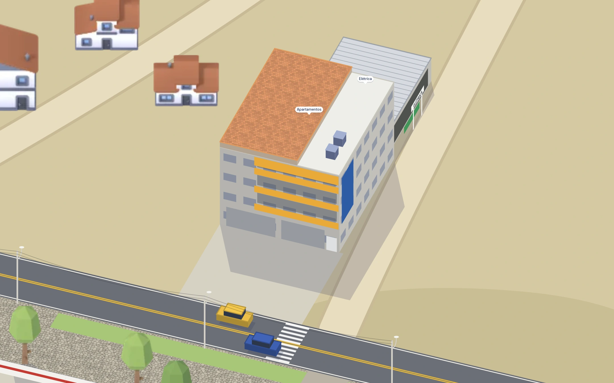
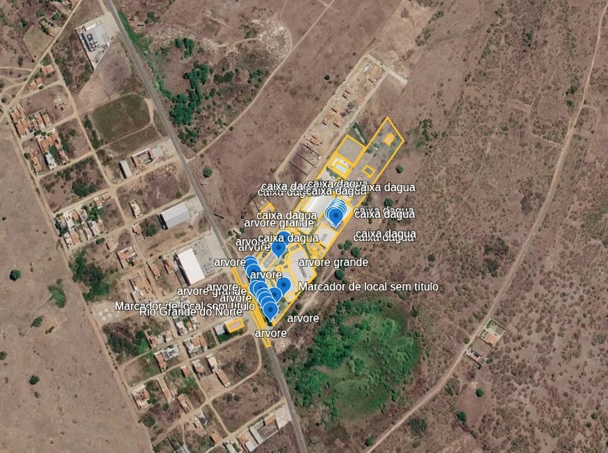
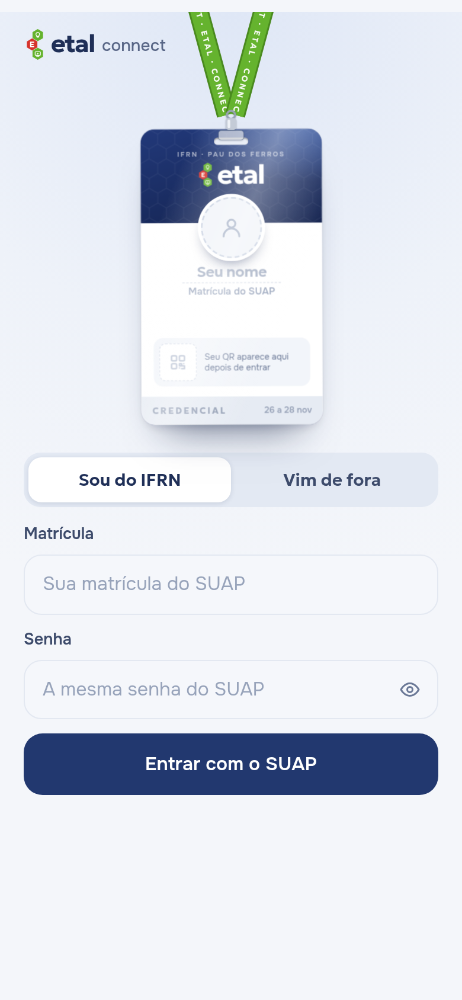
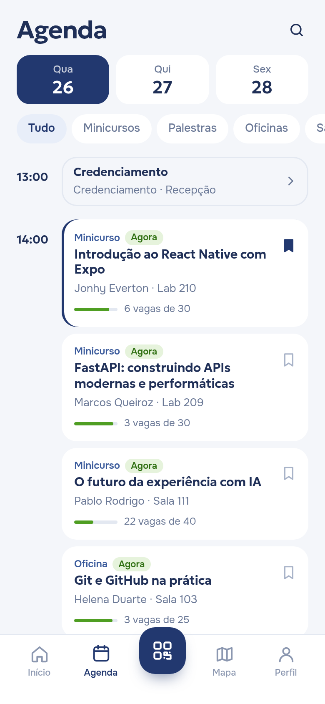
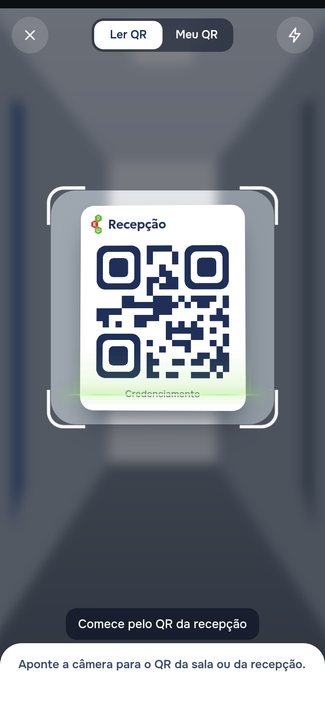
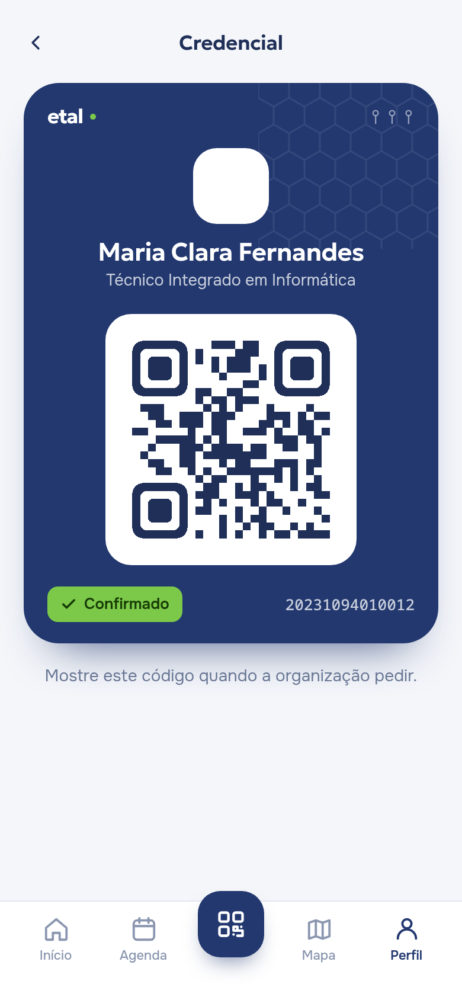

01 / AberturaETAL / Connect
ETAL
Connect
App do ETAL · IFRN Pau dos Ferros


01 / AberturaETAL / Connect

Já começou?Onde é a sala?Como confirmo a presença?
01 / AberturaETAL / Connect
Linha do tempo
25dias
6versões
3andares traçados
14testes da API
02 / O lugarETAL / Connect

02
Capítulo 02
O lugar
Pau dos Ferros, Alto OesteFoto real e modeloA planta encontrada2012 e hojeDo satélite ao 3D
02 / O lugarETAL / Connect
Pau dos Ferros, Alto Oeste


Rio Grande do NorteAlto Oeste · microrregião de Pau dos FerrosPau dos Ferros · ~400 km de NatalIFRN · Campus Pau dos Ferros · BR-405
Oeste PotiguarMicrorregião de Pau dos FerrosPau dos Ferros
02 / O lugarETAL / Connect
Foto real e modelo




02 / O lugarETAL / Connect
A planta encontrada


2012dissertação · UFRN
3pavimentos em planta
Larissa Leiros de Souza
02 / O lugarETAL / Connect
2012 e hoje

02 / O lugarETAL / Connect
Do satélite ao 3D

03 / O appETAL / Connect
03
Capítulo 03
O app
O appO campus em 3DOs três andaresComo a rota é calculadaRota até a salaSegue a hora do diaPor que PWADo login à presença
03 / O appETAL / Connect
O app
- Programação e agenda
- Mapa do campus e dos andares
- Rota até a sala
- Presença por QR
- Avisos ao vivo
03 / O appETAL / Connect
O campus em 3D
03 / O appETAL / Connect
Os três andares
03 / O appETAL / Connect
Como a rota é calculada
72 m≈ 1 min a pé
- Grade de 33 cm só nos corredores
- Dijkstra: o caminho de menor custo
- Parede e curva custam mais
- 3 entradas × escada ou rampa
- metros ÷ 75 = minutos
03 / O appETAL / Connect
Rota até a sala
03 / O appETAL / Connect
Segue a hora do dia
03 / O appETAL / Connect
Por que PWA
PWAReact Native
Abre por um link
Instala sem loja de apps
Usa o mesmo mapa web
Funciona sem internet
Câmera para o QR
03 / O appETAL / Connect
Do login à presença




QR assinado pelo servidor · só vale no horário da atividade
04 / O que já funcionaETAL / Connect
04
Capítulo 04
O que já funciona
Como as peças se ligamO banco de dadosPainel da organizaçãoAPI documentadaPara pôr no ar
04 / O que já funcionaETAL / Connect
Como as peças se ligam
CelularPWA
Site + APIFastAPI · Vercel (teste) · IFRN (produção)
BancoPostgreSQL
SUAPlogin do IFRN
04 / O que já funcionaETAL / Connect
O banco de dados
Pessoaparticipante, visitante ou organização
Agendasalvou a atividade
Presençaleu o QR na sala
Atividadehorário, sala e vagas
Avisoda organização para todos
Número de salanome de cada sala
Link de acessoentrada do visitante
7tabelas
04 / O que já funcionaETAL / Connect
Painel da organização
04 / O que já funcionaETAL / Connect
API documentada
04 / O que já funcionaETAL / Connect
Para pôr no ar
- App publicado em teste
- Login pelo SUAP
- Presença por QR e avisos
- Servidor do IFRN (NADIC)
- Programação real do ETAL 2026
- Teste com pessoas no campus